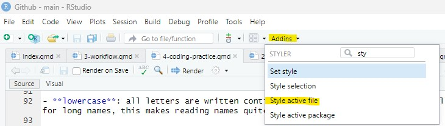

After working through Tutorial 4, you’ll be able to…
explain the difference between Base R and the tidyverse
explain and apply good coding practices
Now that we understand different approaches to writing R code, we focus on how to write code that is clear, readable, and easy to maintain.
1. Base R vs. tidyverse
When working with R, you will often encounter two main approaches to writing code:
Base R
the tidyverse
Both approaches are valid and widely used (see this overview for a comparison). Understanding the difference helps you read other people’s code and develop a consistent coding style yourself.
1.1 Base R
Base R includes all functions that are available immediately after installing R. You do not need to install additional packages to use Base R functionality.
Many online examples, older tutorials, and forum discussions use Base R. For this reason, it is useful to recognize Base R syntax even if you do not primarily use it yourself.
1.2 The tidyverse
The tidyverse is a collection of additional packages designed for data science workflows. It was developed by Hadley Wickham and collaborators at Posit (formerly RStudio).
The tidyverse provides:
consistent function naming
readable and structured workflows
tools for data import, transformation, visualization, and analysis
a shared philosophy for organizing data and code
Many beginners find tidyverse code easier to read because commands follow a consistent style. In this course, we follow the tidyverse style guide. In practice, most R users learn to read both styles but typically choose one main style within a project to keep code consistent.
2. Coding style
Writing code that works is important — but writing code that is readable and understandable is just as important. This is called good coding style.
Or, as Wickham et al. (2025) put it “Good coding style is like correct punctuation: you can manage without it, butitsuremakesthingseasiertoread.”
Good coding style helps you:
understand your own code later,
find and fix errors more easily,
collaborate with others,
make your analyses reproducible.
2.1 Use clear object names
Choose names that describe what the object contains.
Good examples ✅ :
student_agesurvey_datamean_income
Avoid unclear names like 🛑:
xdata1temp
2.2 Use a consistent naming convention style
Names for objects or functions cannot contain blank spaces. Please also avoid special signs (e.g., ! or ?). Apart from these, a few naming convention styles exist:
snake_case 🐍: words are separated using an underscore _. This is the preferred naming style in the tidyverse and the main style used in this course. Example: data_survey.
ant.case: words are separated using a dot .. This style appears frequently in Base R scripts. Example: data.survey.
camelCase: each new word starts with a capital letter (except the first word). This style appears frequently in Base R scripts. Example: dataSurvey.
lowercase: all letters are written continuously without separators. Especially for long names, this makes reading names quite hard. Example: datasurvey.
Different styles exist because R developed over many years with contributions from many programmers.
In this course:
✅ Use snake_case for your own objects and variables.
👀 Learn to recognize other styles when reading existing R code.
Smart Hack: Using the styler package
Install the styler package by Kirill Müller and colleagues. If you then click on Addins at the top of your R Studio and select, for example, “Style active file”. The package automatically formats spacing, indentation, and layout according to tidyverse style conventions.

2.3 Add spaces around operators
Spaces make code easier to scan visually. Compare the following codes:
Bad example 🛑:
number<-5+3
Good example ✅:
number<-5+3
2.4 Comment your code
Comments explain why you are doing something. Good comments help future-you understand past-you. Comments start with #:
# calculate mean age while excluding missing valuesmean(age, na.rm =TRUE)
2.4 Comment your code
Comments explain why you are doing something. Good comments help future-you understand past-you. Comments start with
#: